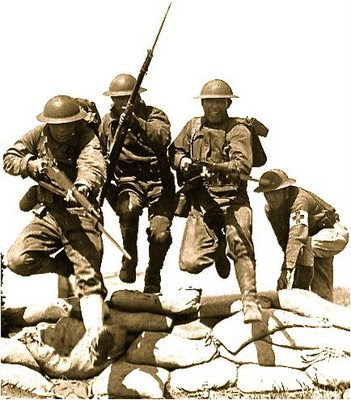
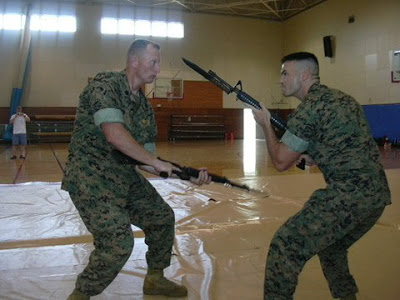

Millett and his men were patrolling in the vicinity of Soam-Ni when they encountered enemy troops along a ridge known as Hill 180. After one of his platoons was pinned down by small-arms, automatic and antitank fire, Millett ordered his men to fix bayonets. He then led an assault up the hill, where, according to his citation, he "bayoneted two enemy soldiers and boldly continued on, throwing grenades, clubbing and bayoneting the enemy, while urging his men forward by shouting encouragement." . . .
“I assaulted an antitank rifle crew,” he told Military History magazine in 2002. “The man at the point was the gunner. I bayoneted him. The next man reached for something, I think it was a machine pistol, but I bayoneted him — got him in the throat.” The third soldier had a submachine gun. “I guess the sight of me, red-faced and screaming, made him freeze,” he recalled. “Otherwise he would have killed me. I lunged forward and the bayonet went into his forehead. With the adrenaline flowing you’re strong as a bull. It was like going into a watermelon.”
Bayonet Drill, World War II

My thanks to TypeAy for forwarding this story from the Fort Jackson, SC, local paper:
Thursday, Jan. 28, 2010
General overhauling training aims for combat-ready troops
By CHUCK CRUMBO
Army basic training needs to get back to basics.
That's the word from Lt. Gen. Mark Hertling, who's in charge of overhauling Army training.
"We need to make sure that what we're training is a good soldier we can hand over to their first unit and make sure they're ready for combat," Hertling, deputy commanding general for initial military training, said Wednesday during a visit at Fort Jackson.
Before the war on terror began in 2001, U.S. troops trained to fight a large, mechanized force like the Russian army in the woods and mountains of eastern Europe.
But in recent years basic training has undergone a number of changes as the Army adapts to an enemy in Afghanistan and Iraq that lives among the general population and travels by pickup and donkey cart.
To prepare soldiers for today's battlefield, a number of tasks have been added to the 10-week training program and a few have been removed, said Hertling, a former tank commander.
Soldiers are taught a number of skills, but don't have the time to master all of them, said Hertling, who's assigned to the Army's Training and Doctrine Command at Fort Monroe, Va.
"We were teaching soldiers too much stuff," said Hertling, a veteran of Desert Storm and the wars in Afghanistan and Iraq. The result was a "task paralysis" and loss of focus.
One task Hertling wants to do away with is bayonet training.
In today's wars, there's no reason for soldiers to learn how to fix bayonets to their rifles and disembowel an enemy combatant, Hertling said. Besides, bayonets don't fit rifles soldiers carry today, he added.
Hertling, though, conceded that bayonet training is deeply ingrained in the Army culture.
"Some of these ideas would make old infantrymen turn over in their graves," Hertling said.
Hertling also wants combatives or hand-to-hand fighting to de-emphasize grappling or basic wrestling moves. Instead, soldiers need to learn to fight with their hands and use anything they can grab - whether it is a knife or stick - as a weapon, he added.
Recruits need to learn how to use their hands, the St. Louis native said. "A greater majority of recruits have never been in a fistfight," he added.
Fort Jackson is the largest of the Army's five basic training centers. About 40,000 or half of all soldiers and 80 percent of the women entering the Army each year are trained at the Columbia post.


Training at Camp Funston, KS, 1918.TypeAy forwards this snippet and comment upon it.
quote: "One task Hertling wants to do away with is bayonet training.
In today's wars, there's no reason for soldiers to learn how to fix bayonets to their rifles and disembowel an enemy combatant, Hertling said. Besides, bayonets don't fit rifles soldiers carry today, he added."
Right.
Tell that to (U.K.) Lt. Adamson

Bayonet-charge officer tells of frontline heroics
15 September 2009
A fearless Army Officer from the Isle of Man who has been awarded the Military Cross for his "supreme physical courage" and "calm leadership" in combat has been remembering how he made a bayonet charge towards the enemy, thus ensuring the safety of his platoon.
Lieutenant James 'Jim' Adamson, 24, then a platoon commander with The Royal Regiment of Scotland, has already been awarded a Mention in Dispatches (MiD) - the oldest form of recognition for gallantry within the UK Armed Forces in the previous Operational Honours list in March - for his bravery in Afghanistan.
Shortly after the incident that earned him a MiD during a mission to secure a strategically important district centre on October 7, 2008 Lt Adamson's platoon came into repeated contact with enemy forces.
His platoon however continued to advance, but the sections became separated as they secured the compounds taken. "My sections were static but too far apart for my liking," said Lt Adamson, speaking at a short ceremony announcing the names on the latest Operations Honours and Awards list, published on Friday, September 11, 2009.
"I was positioned with the mortar fire controller and the interpreter to the north, 100 metres from each between two sections - which is a long way in the Green Zone."
As they moved up a shallow stream to link up with one of the sections, two enemy fighters emerged five metres in front of them firing a machine gun. Lt Adamson immediately shouldered his weapon and as the mortar fire controller fired made a bayonet-charge towards the enemy.
His citation reads: "Adamson's leadership throughout the day was exceptional. His actions neutralised an enemy flanking attack that could have resulted in his platoon taking casualties. Adamson's supreme physical courage, combined with the calm leadership he continued to display after such a traumatic and bloody experience was of the very highest order.
"They set the greatest possible example to the Company and had an inspirational effect on his men for the final hard remaining weeks of the tour. Adamson's actions on this day are deserving of the highest official recognition."
Lt Adamson said: "I was acting on auto-pilot more than anything. The nature of the terrain and conflict there means it is more natural that platoon commanders see action now rather than stand back and command."
His girlfriend Sophie Bewick who attended the ceremony with him said: "I'm very proud of what he did, although I did make him promise before he left that he wouldn't do anything dangerous and get a medal. And he comes back with two!"
Lt Adamson attended the Isle of Man Grammar School in Ramsey, and commissioned into the Army as an officer in August 2007. He is currently a Company Second in Command of his battalion, which is based in Canterbury, although he is soon to be posted to the Falklands Islands for two months.
His parents Andrew and Trisha still live in the Isle of Man.
CPT Lew Millet leads his soldiers in a bayonet charge that won him the Medal of Honor, Korea, 1951.

I urge readers to go to the link and listen to Lt. Adamson's description of the engagement. Both he and the FO ran out of ammo. When the last attacker continued to close, Adamson did the best thing he could think of: he charged and bayoneted the man. He then describes spending two long minutes with empty weapons waiting for the cavalry to arrive.
Vanderboegh's thoughts on the matter: Bayonets are a piece of dead weight on an infantryman who needs to shave every ounce -- until he needs one desperately.
Statistically, this may not happen often these days, especially in modern armies with massive supporting fires and logistical tails at their back. But try to tell Lt. Adamson that his case was "statistically insignificant" and I suspect he will give you a rude and profane Brit answer.
Note well that Lt. Adamson was at the tip of the spear (no pun intended) of a modern army. Yet both he and his FO ran out of ammo. Excrement happens. Note also that his bayonet was already fixed. He wasted no time because he was ready with the weapon and trained in its use. The extra second or two undoubtedly saved his life.
I have had this argument with a very good friend, a West Pointer and career Army officer, for the better part of a decade now. Like LTG Hertling, he believes the bayonet is superfluous on a modern battlefield.
I say that as long as a light infantryman may find himself alone, out of ammo, isolated on a battlefield, the bayonet will still be needed. Likewise, as long as soldiers -- professionals or militia -- are needed to man roadblocks, secure installations or maintain order among crowds of civilians, the bayonet provides plain psychological evidence of serious intent without reducing the equation to shoot or retreat.
This will, I am sure, be one of my more controversial praxis posts because everyone has an opinion. Hertling is right about one thing: You can't mount a bayonet on the current M-4. But is this a reason to do away with the bayonet, or to fire the Army procurement general who approved the design?
One thing I'll bet on though.
Hertling might talk the Army into getting rid of bayonet training, but the Marines will tell him to go to hell, thank you very much.


29 comments:
if nobody is mounting bayonets, then you should be carrying a knife, a hatchet, or one of these babies. they won't be charging you down with a glorified spear, but you might suddenly need to go on the offensive up close. otherwise, you'll be making carefully aimed shots with a bolt or semi-auto until they're very, very close. right?
Bayonets will no longer be needed when: Rifles are no longer needed, and when soldiers no longer come into physical contact with other soldiers. People who believe bayonets are not needed anymore are just whistling in the dark, on guard duty, alone, without a bayonet.
The M-4 will not accept a bayonet. Solution? Get rid of the M-4, and get a real rifle, like a FAL or an M-14.
Col. Millett was an awesome guy. If bayonets are good enough for him, they are good enough for me. He taught my mom how to shoot at his place in Idyllwild, and he wrote a recommendation for me to go to USNA. He will always be a real American hero in my mind.
Sure, the plan is to neutralize the enemy from a distance, but what battle plan survives first contact with the enemy? Infantry is infantry and it still has to engage the enemy up close and personal. Who wants to do that without ALL the necessary equipment? Bayonets are a must-have and so is bayonet training.
Nothing scares an enemy so much as the realization that they are facing somebody willing and able to close with them and kill them in hand to hand combat. Nothing.
Being shot for many is an intellectual fear. We've never been shot. (Well most of us have not.) Therefore it is an abstract fear.
We've all been cut, even if it is a small paper cut. We understand emotionally at an instinctive level what that shiny piece of metal will DO to us. Its a very different fear.
Bayonets do also have their place in many other aspects of warfare. Ever see an Indian riot? Nothing clears them out faster than twenty or so guys with their old Enfields fixing bayonets and walking towards the crowd.
And if you would rather carry a knife than a bayonet, you've never been in a knife fight.
And don't forget the modern day battle axe - the sharpened E tool.
You can mount a bayoinet on a M-4 just like anything else in carbine and rifle-land. Might not be the same bayonet as something you have in stock but that doesn't keep the government from wasting money on loads of projects and things of less military utility.
If I recall correctly, the current M-4 carbine will in fact take a bayonet. That was the factor that determined the 14.5 barrel length that is now causing problems with the basic operation and also the terminal ballistics of the 5.56 round. 16 inch barrels with carbine length gas systems will not accept a bayonet, although the mid length gas setup might. Another option for empty weapon fighting:
http://www.youtube.com/watch?v=5P5FbCckJLc&feature=related
Starts about 4 minutes in.
If I had a penny for every time this we don't need bayonets any more silliness came up only to be disproved by another bayonet fight. I would be one rich fellow.
The first thing I want to know. What is Lt. Gen. Mark Hertlings background?
I suspect he is armor or mechanized infantry. I would guess he never has been involved in a close up personal fight without backup provided by big gun units. No disrespect is intended to the good general.
"Bayonets don't fit rifles soldiers carry today." An argument that you need a bayonet built to fit the rifle. I will skip the debate on the M4s value.
Vanderboegh's thoughts on the matter: "Bayonets are a piece of dead weight on an infantryman who needs to shave every ounce -- until he needs one desperately."
So let us combine the bayonet with something we need with us anyway like a mine probe or a camp knife.
Remember this?
Sipsey Street Irregulars
Monday, September 14, 2009
Praxis: L. Neil Smith's KaBar Carbine Bayonet
/sipseystreetirregulars.blogspot.com/2009/09/praxis-l-neil-smiths-kabar-carbine.html
And that little mount on the rifle can secure more than just the bayonet.
Yes, the midlength will accept a bayonet, as it has the same flash hider-front sight ratio as an AR15 rifle.
Nothing chills the blood of an enemy like COLD STEEL.
A problem with .223 is that it requres the enemy to be too close for comfort to shoot them with a 2700fps+ bullet, which will be moderately effective, even with a correct 20" barrel. When they close to bayonet/clubbing range (leaking slightly from 1/5th inch holes), the Mattel stock doesn't swing or hold up like walnut or beech. I'll take the weight of an M14/M-1G/M1A/FAL, please.
That is correct. There is at least one manufacturer (RRA) if not more, that I have seen, with a 16 inch M4 barrel, but "mid-length" handguards. This configuration restores the correct position of the bayonet lug on the barrel, and allows for proper bayonet mounting.
I am a former Marine Infantryman, and have ALWAYS wondered why the Carbine length handguards on the m4 were there at all. Shortening the overall length of the barrel is understandable. Making a bayonet impossible is incomprehensible. Seeing the RRA midlength handguard configuration seemed only natural to me. That said, a bayonet lug can be mounted foreward of the front sight block on the carbine style configuration.
Ask the current USMC Commandant, who despite staff suggestions and field requests, doesnt want to do away with the A2 style stock and buttplate, for several small unit tactical reasons, including its use as a hand to hand weapon.
Yeah, you can have my bayonet, when you pry it off the end of the rifle in my cold dead hands.
Not to mention, by the way, that the Mid length handguard configuration moves the front sight block further away from the rear sight. Thus the front sight post is further from the rear sight aperature. Accordingly, this should enhance accuracy, even if only marginally.
Its hard for me to conceptualize that someone could even consider a bayonet might not come in handy at some time. Ammo condition "red" aside, even the best equipment can malfunction. Ever heard of a misfeed or jam? What about a misfeed in urban fighting...just dwell on that. shooting most likely means engaging at close range, then a malfunction...hmmm....
IIRC, most modern bayonets are also designed to serve as a multitool to some extent. As such, carrying one instead of a similarly sized knife might be more practical.
"The first thing I want to know. What is Lt. Gen. Mark Hertlings background?
I suspect he is armor or mechanized infantry."
Correct armor - I remember him from the G-3 section in 1AD, while I was assigned to 1AD. I wasn't impressed with him, but obviously his boss (then LTC Andrew "Skip" Bacevich) was.
Here we go again,just when I thought Army officers might be capable of "getting it". The Infantry charge,Bayonet or not, is a timeless tactic that will never be out of fashion. The lessons of war past & present are lost to these fools.de
When I started building my "ultimate" AR, having the ability to mount a bayonet was one of the criteria.
I went with an RRA lower with Magpul pistol grip and stock. The upper was ordered as a 16" mid-length from RRA, and I replaced the A2 front sight with a modular railed gas block from Brownells, which offered an optional bayonet lug attachment, which I got as well.
Topping it off with a Larue 9.0 handguard, I now have a 16" railed middy that has a front folding BUIS and a fully functional bayonet lug.
Other companies offer gas blocks with integrated folding sights and bayonet lugs, for those that aren't picky about their back up sights.
My choice close quarters weapon is my tomahawk which I carried in the Phillippines and Iraq.
That said, it's a damned fool who eschews the bayonet. The western way of war is based around the spear. The mission of the Marine rifle squad is to locate, [em]close with[/em] and destroy the enemy by fire and manuever and the repel the enemy's assault by fire and [em]close combat.[/em]
Someone needs to tell the dear General that even my young wife has a bayonet on her mid-length AR. I think combat soldiers can use it.
Hell, the Marine Corps recently changed their bayonet to serve dual duty as a fighting knife.
Kill bayonet training? Really? Even more valuable than the bayonet is the warrior ethos. It is harnessed through bayonet training.
But then again, that's what I should expect from army brass considering their other hotshot General McCrystal is saying we need to negotiate a peace with the Taliban.
Tell it to the Marines shitbird.
The current USMC OKC-3S bayonet is a carbon steel 8 inch blade knife that has, in my opinion, a superior shape and heft. Just google OKC-3S to find them.
Pdxr13, I know you've been in the shit by the way you talk of the "Mattel" stock. We had a saying in VN from the old tv commercial "you can tell it's swell, it's Mattel". The bayonet is a fearsome weapon. I trained with it on the M1 rifle in basic and AIT (thats Advanced Infantry Training) for you younger folks and on the M14 rifle later. It was several HARD, HARD days in the sawdust pits, but the esprit that came out of it was awe inspiring. You knew you were a soldier when you passed that course.
Bayonet training in the mid-1940s constituted the most rigorous of anything I undertook at the IRTC at Ft. Bragg. It had an added effect that must not be understated; it raised the aggressiveness and confidence of the infantry soldier to a high level. It isn't possible for me to conceive a worse decision than to leave a front-line foot soldier helplessly, nakedly disarmed in the event his ammunition has been expended or his rifle has malfunctioned.
Today, this octogenarian is hard-put even to raise an M-1 to his shoulder, but the stimulation of knowing how to employ his "spear" will never escape my memory.
A few Soldiers who I respect mentioned this blogsite and some of the things being posted as a result of an interviewed I did at Ft Jackson. They recommended I clear things up with some additional information.
We're revising how we "fight with a rifle" as part of basic training. We're looking at the most likely ways Soldiers will be asked to fight, based on what we've learned in combat, especially in combat over the last eight years. Our new training will include significant changes in a pugil assault course (which I would challenge anyone to compare to the old Bayonet Assault Course, and see which one they think is tougher), fighting with devices (knives, etc) and revisiing our combative training skills. That is in addition to how we conduct tough physical training, and a more intensive form of basic and advanced rifle marksmanship. It will be pretty intense, and -- more importantly -- relevant to the current and future operating environment.
We can teach the "spirit of the warrior" (replacing the "spirit of the bayonet, as I was taught)by using all kinds of devices and training in our professional values. And that might be important, because the chance of actually using a bayonet in combat is relatively rare (even given the unique actions of the Highlanders, or that of the great infantry hero COL Millett).
For those who submitted comments about me personally, I did have to smile. Yes, my chosen branch was Armor. I've commanded Infantry and Cavalry units, and have had three tours in combat, and I've been assigned to two different training centers. And by the way, in all my years, I've never seen bayonet training being conducted outside the training base (Army or Marines), so I'm wondering how people sustain these critically important skills....or is this just something that is introduced in basic, and never practiced again? Seems to be the case. Not a good way to train.
Thanks for all of you for being interested in what we're doing in the training base. We're still producing the best Soldier in all the world...and we're trying to keep it that way!
I started in out USMC in 1970, bayonet trained w/M14. 1975, Army Infantry AIT - no formal bayonet training, just 2 hours of "pugil pit" - I was undefeated five times in a row (aftewards, so tired I couldn't hold up the stick). The Army units that I have been in, (Regular, Guard, and now USAR), if they Have bayonets, refuse to Issue them (infantry units included) (Cdr's afraid that one will get lost, or used on a buddy)!
I have now been twice to Afghanistan, once to Iraq (with Civil Affairs) since '06 - no bayonet issued, nor training (except worthless Army Grappling), so I bring my own M7. It DOES fit on my M4, I practice with it in private (don't want to scare the REMFs). I prefer the M7 (dagger-style) to the M9 (Bowie style) because the M7 is better for stabbing (and penetrating clothing), while the Bowie is really only good for slashing. I train to attack the throat, armpit, wrists, knees, femerals, etc. I DO worry that I will break my M4's stock if I buttstroke someone with it!
I also carry a boot knife on combat suspenders, under my shirt and vest (my "hider").
Oh, and I head back to Afg. later this year, with another PRT, for one last time.
I really enjoy your discussions: Keep Up The Fire!
Mike Settles
SGM, USAR
To LTG Hertling:
Sir, your comments about a lack of bayonet training AFTER IET are right on - and are consistent with what I have seen as an Army that disregards Close Combat in favor of five-mile daily "Unit Runs". PT needs to be much more combat-oriented, and Close Combat MUST be a part of that.
You may also note from my previous post that Unit Commanders loathe to issue bayonets, in training, or for combat. In the former case, they fear their loss (or are afraid that their young troopers will use them on each other), and in the later case, can't think of a "use" for them. In MY experience, every Soldier needs to have on them a good field knife, wich purpose either the M7 or the M9 bayonet serves - Gerber (or other brand) multitools are too small and too weak for "field knife" service (though you CAN open a care-package from home with one). Plus you can use a bayonet as a fighting knife, or even put it on the end of a rifle.
Nothing beats a bayoneted rifle to put fear into the eyes of a bad-guy, or aggressive determination in the attitude of a Soldier. In other words: When he sees me coming with my bayonet fixed, he knows I'm serious.
I read about your other improvements with Marksmanship, and must comment that the ONE most basic thing which has been missing is "downrange feedback". Forever, we have accepted Qualification as a "check the box" activity, with no effort or opportunity for shooters to verify zeroes at actual distance, nor learn/practice how distance/wind/light/elevation, etc. affect the fall of shot, before they are thrown onto the record fire range to shoot pop-up targets. (ARI did a study, published in FC23-11 in about 1991, which STRONGLY suggested that the BEST basic marksmanship training was conducted on a known-distance range.)
I would appreciate the incorporation of many of your IET training improvements into Pre-Deployment Training at the several Mobilization Stations (especially Cp Atterbury, where I will report in July).
Thank you Sir.
Michael D. Settles
SGM, USAR
It seems like with all the close- in air support from gun ships, I would opt for that if I could, rather than the bayonet. I would still like to be issued one and cannot believe they are no longer considered issue equiptment. LTC. Hertling, I remember the "Spirit of the Bayonet" is to "KILL". What is the Spirit of the warrior- - - - to hurt? It seems to me that if anyone hurts one of those terrorist they wind up with an article 15 or courts martial. The latest incident I'm reminded of are the 3 Seals on trial and the Army Lt. now in prison in FT. Leavenworth for shooting one in self defense. I believe the R.E.M.Fs are running things now instead of the warriors.
I too knew COl Millett, and share Jay Stang's regard for the man, RIP.
I truly believe that the bayonet has a place as a combat/utility knife. Fixed bayonets have a powerful psychological impact upon the enemy, as well as your own troops. Bayonet/pugil stick training is a very good thing for teaching a fighting mindset in recruits.
That being said, the major problem with bayonets today is that the M16/M4 (and to some extent the M14, due to its unsupported barrel) are really not robust enough for bayonet use. I used an M16 in a real bayonet assault course during advanced training, and my rifle was DESTROYED by the end. smashed buttstodk, bent buffer tube, cracked lower receiver, broken upper receiver, bent barrel, smashed handguards. The M14 is almost certain to get a bent barrel with significant bayonet usage, as it lacks barrel support. Barrel support is why most military pattern rifles prior to the assault rifle have had stocks to near the barrel ends. Consequently, I haven't worried much about bayonets on my 16" M4geries with carbine gas systems. Instead, I have a 12" barong on my web gear. If I need an immediate weapon, a hard jab of the flash hider to the head/chest/throat/guts will ahve to do; I plan to the toothed Phantom flash hiders from Yankee Hill Machine at some point.
What good is a bayonet to protect Americans from kikes at Goldman Sachs stealing savings, 401k's and pension funds? Guys like Blankfein (and Geithner)..live in gated communities. Good luck using your bayonet to get your money back.
I must be the oddball. I use bayonet when hunting dangerous game and have no military experience whatsoever. I also train with the bayonet in my martial art, I would never buy any rifle that you could not attach a bayonet to. I own two. I keep a 3' long machete for backup.
Living in a town near FT Bragg, I can see how the army is run: poorly. Also incredibly inefficient. Thus I have little respect for the morons who run it. Actually, I have none at all. The only people stupid enough to stop the use of a weapon are the only ones who have never used it to defend themselves.
Post a Comment